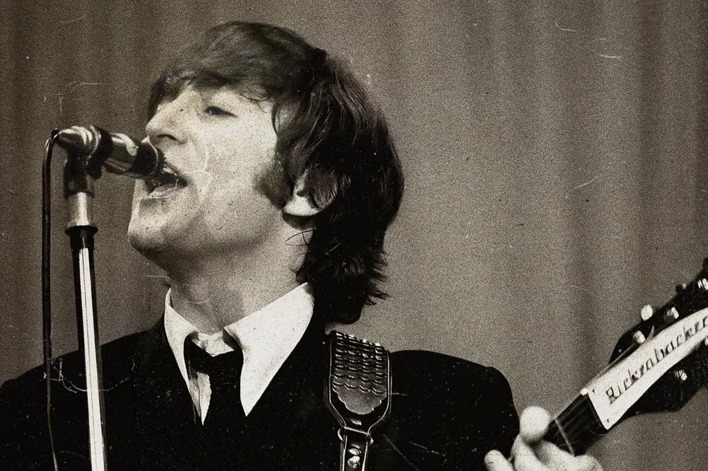
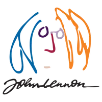
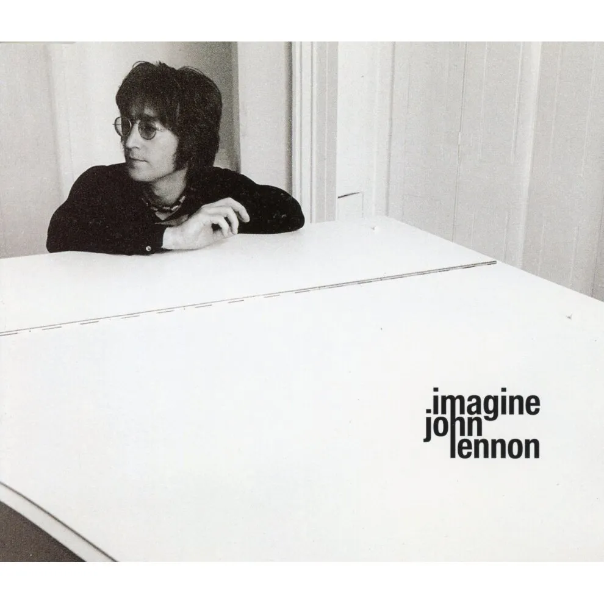
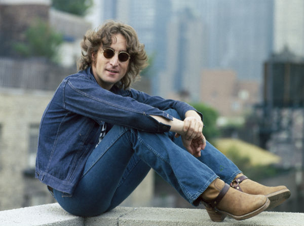
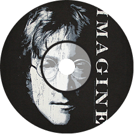
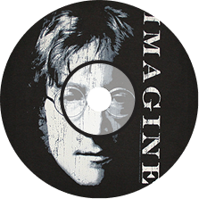

1971, America
John Lennon은 사랑과 분노, 평화와 상처, 모순 속에서 예술을 외친 사람이었다.
그는 리버풀의 가난한 가정에서 태어났고, 어릴 적부터 가정의 붕괴와 외로움을 겪으며 자랐다.
어머니는 일찍 세상을 떠났고, 아버지는 부재했다.
그는 늘 자기 안의 결핍과 싸워야 했고, 그 공허함은 음악으로 표현되기 시작했다.
그는 Beatles로 세계 정상에 올랐지만, 그곳에서 그는 점점 자신을 잃어갔다.
광적인 팬들, 끝없는 스케줄, 그리고 “롤 모델”이 되어야 한다는 사회적 압박은 그를 예민하고 거칠게 만들었고,
동료들과의 관계도 점점 무너져 갔다.
그는 불륜, 마약, 폭력성, 그리고 고독 속에서 흔들리는 인간이었지만,
동시에 그 누구보다 자기 자신을 들여다보려 했던 예술가였다.
그런 그가 요코 오노를 만나면서부터,
점점 세상의 틀에서 벗어나 예술, 철학, 정치, 이상주의라는 새로운 언어로 세상과 소통하기 시작했다.
그들의 사랑은 당시 언론에선 “위험하고 괴이한 결합”이라 불렸지만,
존은 요코와 함께 세상과 단절되는 대신 세상을 향해 정면으로 말하는 법을 택했다.
“Imagine”은 그런 존 레논의 전환점이다.
그가 믿었던 것들-경계 없는 세계, 소유 없는 삶, 신 없는 평화-는 현실과 어긋났고,
그래서 더욱 간절한 상상이 되었다.
그는 1980년, 뉴욕 거리에서 총격에 쓰러졌지만 그의 노래는 여전히 살아 있다.
그가 꿈꿨던 세계는 오지 않았지만, 그의 목소리는 우리에게 계속 묻는다.
“당신은 그런 세상을 상상할 수 있는가?”
“Imagine”은 평화를 노래하기에 더 강인한 노래였다.
이 곡은 총도 없고 욕도 없었다.
그저 피아노 한 대와 부드러운 목소리로,
세상의 질서를 조용히 해체했다.
“Imagine there’s no heaven” - 종교를 부정했고,
“Imagine there’s no countries” - 국가와 국경을 부정했고,
“Imagine no possessions” - 사유재산과 자본주의를 부정했다.
기득권에게 그것은 아름다운 상상이 아니라, 체제를 향한 정중한 파괴였다.
이 노래는 기독교 보수층으로부터 신성모독이라 비난받았고,
공산주의적 메시지를 담고 있다며 일부 국가에서는 공영방송에서 제외되거나 공연 불허되기도 했다.
특히 미국 내에서는 반전 운동과 맞물려 정치적 상징이 되었고,
공화당 계열 정치인들과 보수 언론은 이 곡을 “가짜 평화주의자의 망상”이라 공격했다.
존 레논은 말보다 상상으로 설득했고,
바로 그 상상이 권력자들에게는 가장 불편한 것이었다.
“Imagine”은 총보다 더 깊이 박히는 한 문장이었다.
그래서 검열당했고, 그래서 지금도 금지되길 원하는 사람들은 있다.
하지만 그 조용한 상상은,
전 세계 사람들의 마음에 반전과 자유의 언어로 영원히 남게 되었다.

Imagine there's no heaven
천국이 없다고 상상해봐요
It's easy if you try
별 거 아닐거에요
No hell below us
우리 밑에는 지옥이 없고
Above us only sky
우리 위에는 하늘만이 있어요
Imagine all the people
상상해 봐요 세상 모든 사람들이
Living for today
오늘을 위해 살아가는 모습을
Imagine there's no countries
국가가 없다고 상상해봐요
It isn't hard to do
어려운 일이 아니에요
Nothing to kill or die for
죽고 죽일 필요가 없고
And no religion too
종교도 없을 거에요
Imagine all the people
상상해봐요 모든 사람들이
Living life in peace
평화 속에서 살아가는 모습을
You may say I'm a dreamer
당신은 저를 몽상가라고 하겠지만
But I'm not the only one
저는 혼자가 아니랍니다
I hope some day you'll join us
당신이 우리와 함께하기를 바라요
And the world will be as one
그렇다면 세상은 하나가 될 거예요
Imagine no possessions
사유 재산이 없다고 상상해봐요
I wonder if you can
당신이 할 수 있을지 궁금해요
No need for greed or hunger
욕심 부릴 필요도 굶주릴 필요도 없어요
A brotherhood of man
인류애만이 있을 뿐이에요
Imagine all the people
상상해봐요 세상 모든 사람들이
Sharing all the world
나누며 살아가는 모습을
You may say I'm a dreamer
당신은 저를 몽상가라고 하겠지만
But I'm not the only one
저는 혼자가 아니랍니다
I hope some day you'll join us
당신이 우리와 함께하기를 바라요
And the world will live as one
그렇다면 하나된 세상에서 살아갈 거에요



 
